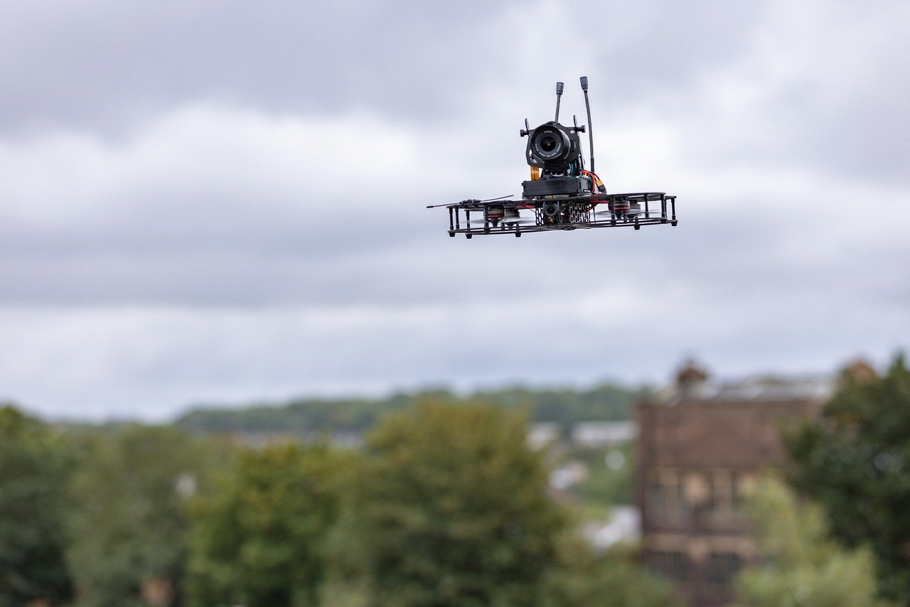
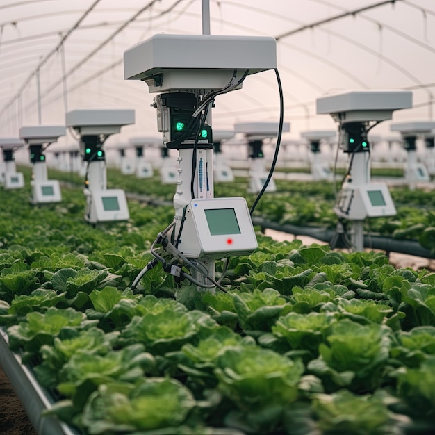

Bem-vindo ao Agrinho 2025
Unindo tecnologia, sustentabilidade e educação para transformar o campo e o futuro.
Saiba Mais🌱 Sobre o Agrinho
O Agrinho é um programa educacional que aborda temas como meio ambiente, cidadania, sustentabilidade e tecnologia no campo. Seu objetivo é conscientizar crianças e jovens sobre a importância do agronegócio, da preservação ambiental e do desenvolvimento sustentável.

♻️ Sustentabilidade no Campo
A sustentabilidade é essencial para garantir recursos para as gerações futuras. Práticas como o uso consciente da água, energia renovável e o plantio direto fazem parte da agricultura moderna.

🚜 Tecnologia no Agronegócio
Drones, sensores, tratores autônomos e inteligência artificial revolucionam o campo, aumentando a produtividade e diminuindo os impactos ambientais.
⚠️ Desafios do Futuro
Os desafios incluem as mudanças climáticas, escassez de recursos, preservação do solo e a busca constante por equilíbrio entre produção e meio ambiente.
📞 Fale Conosco
Tem alguma dúvida? Envie uma mensagem para nós.